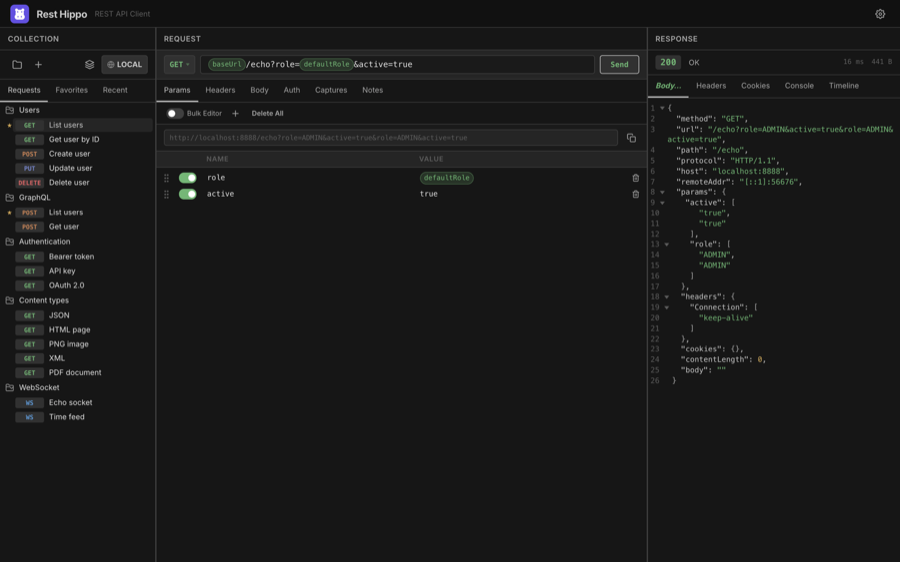
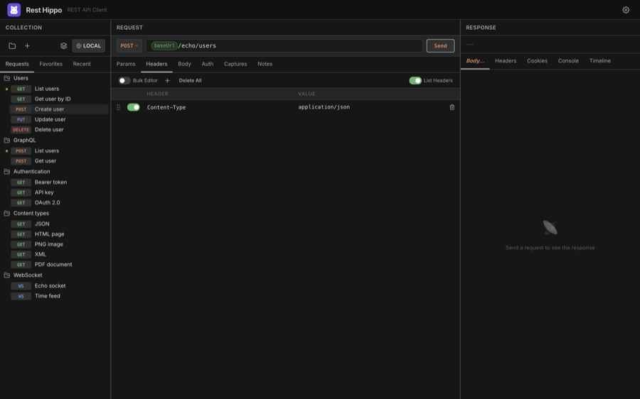
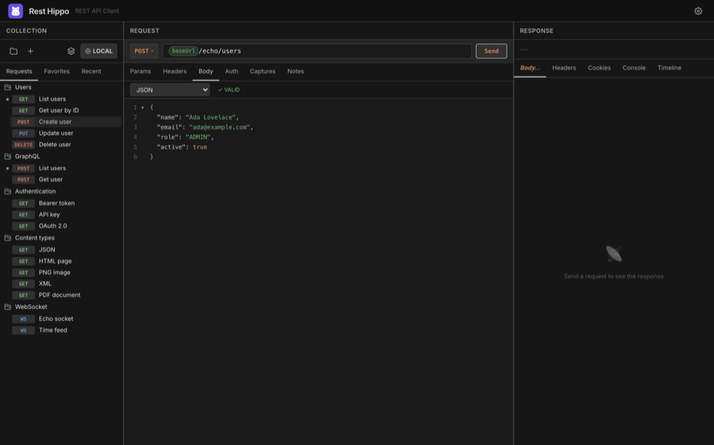

Building Requests
The center panel is the request editor. At the top is the request bar — the method, the URL, and the Send button. Below it, a row of tabs lets you add query parameters, headers, a body, authentication, and post-response captures.
Edits save automatically. There is no Save button or shortcut — every change you make is written to disk a moment after you stop typing, so your work is always persisted and there's no unsaved state to lose.
The request bar
Method
Click the method button on the left to choose the HTTP verb:

Rest Hippo supports GET, POST, PUT, PATCH, DELETE, HEAD, OPTIONS, and a
Custom… option for any non-standard verb your API expects.
URL
Type the request URL into the bar. You can drop
{{variables}} anywhere in it — for example
{{baseUrl}}/users/{{userId}}. When Show URL preview is on (Settings →
Appearance), Rest Hippo shows the fully-resolved URL beneath the params, so you can
confirm exactly what will be sent.
Press Enter in the URL bar to send the request, or click Send. While a request is in flight the button becomes Cancel.
Query parameters
The Params tab edits the query string as an editable key/value grid. Rest Hippo keeps it in sync with the URL — editing one updates the other.

- Each row has an enabled toggle, a name, and a value. Disabled rows are kept but not sent.
- Both name and value accept
{{variables}}. - Use + to add a row, the trash icon to remove one, and Delete All to clear them.
- Toggle Bulk Editor to edit all parameters as plain text instead of rows — handy for pasting.
Headers
The Headers tab works the same way — an enabled/name/value grid with a bulk text mode.

As you type a header name, Rest Hippo suggests standard header names
(Content-Type, Authorization, Accept, …). Values accept {{variables}}.
Some headers are managed for you. When you choose an authentication type, the matching
Authorization(or custom) header is added automatically at send time.
Request body
The Body tab lets you choose a body type from the dropdown and edit it:

| Body type | Use it for |
|---|---|
| No Body | GET/HEAD and other bodyless requests |
| JSON | application/json payloads, with syntax highlighting and validation |
| YAML | YAML payloads |
| XML | XML payloads |
| Plain Text | Any raw text |
| Form Data | multipart/form-data — key/value fields, each Text or File |
| Form URL Encoded | application/x-www-form-urlencoded key/value pairs |
| GraphQL | A GraphQL query + variables |
| File | Send a file's raw bytes as the body |
For the structured editors (JSON / YAML / XML), Rest Hippo shows a ✓ VALID /
✗ badge as you type and can prettify the document. The code editor has
line numbers, optional code folding, and a
resize handle. {{variables}} are highlighted inline and resolved at send time.
The Form Data and Form URL Encoded editors use the same key/value grid as Params and Headers, with a bulk-text mode. In Form Data, switch a row between Text and File to attach a file.
Authentication & captures
Two more tabs round out the request:
- Auth — attach credentials (Bearer, OAuth 2.0, …).
- Captures — pull values out of the response into variables for later requests.
There's also a Notes tab for free-form Markdown notes attached to the request.
Next: Authentication →